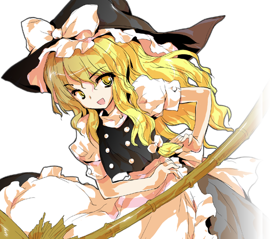

Reimu is the main character from the series being there since the first game. She in a Shrine called the Hakurei Shrine. She is far more lazy and doesn't really care what others do, unless they cause an incident. Funny enough, depsite Reimu apprently being the shrine maiden of the Hakurei God, she knowns little to none about him or her, not even their first name. It's suggested that the god could be angry at her which is why they don't show up. Reimu also slacks on her dutues as a shrine made. Originally, she's supposed to kill or "exterminate" the supernatueral (Youkai, ghost, fairies) who threaten humans who reside in Genskoyo but, really doesn't. At worst, she gives them a bad beating in battle and lets them off the hook if tihey promise to not do that again. Sometimes the character she defeats stays with her for awhle. The Shrine is also treated less like a sacred place and more like a hangout spot for most of the cast, esapilly when it comes with Marisa or fairies. Her ability is too complex to explain in a paragraph but in short, she can fly depsite being a human and can phase through attacks like a ghost.
Marisa Krisame

Marisa is Reimu's childhood friend, and the other protagonist. She lives in a shop called the Kirisame shop loacated in The Forest of Magic. In gerneal, Marisa has a more outgoing perosnality being the more extroverted out of the cast. She has a habit of stealing from others claiming that she'll give it back once she dies from age. Marisa also has a rivialy/friendship with a formally human magicain, Alice Margatorid. Lastly, she has the goal of surpassing humanity while still being human. She is a human magicain, capible of using magic. She mainly uses more flashy magic her main ability being a spell called, 'Love Sign: Master Spark'. Which is jus a huge rainbow beam that will probably hurt when getting hit by it. She is unable to fly so relys on a broom.She isn't a bad as she deeply cares about those around her and is more than wiling to take care of her friends. If anything, she's ther reckless hero of the series.
(Quick side note: Touhou 1-5 is half canon. It's a bit weird the charcters from 1-5 still exist just not the events that half happened.)